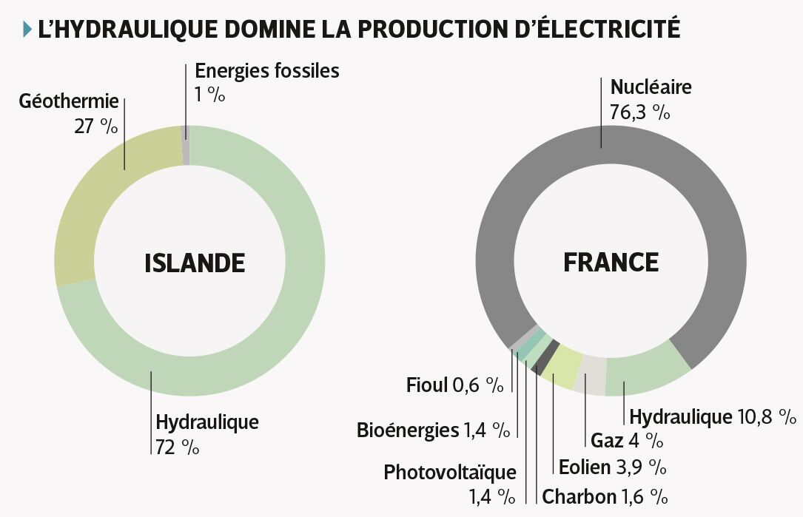
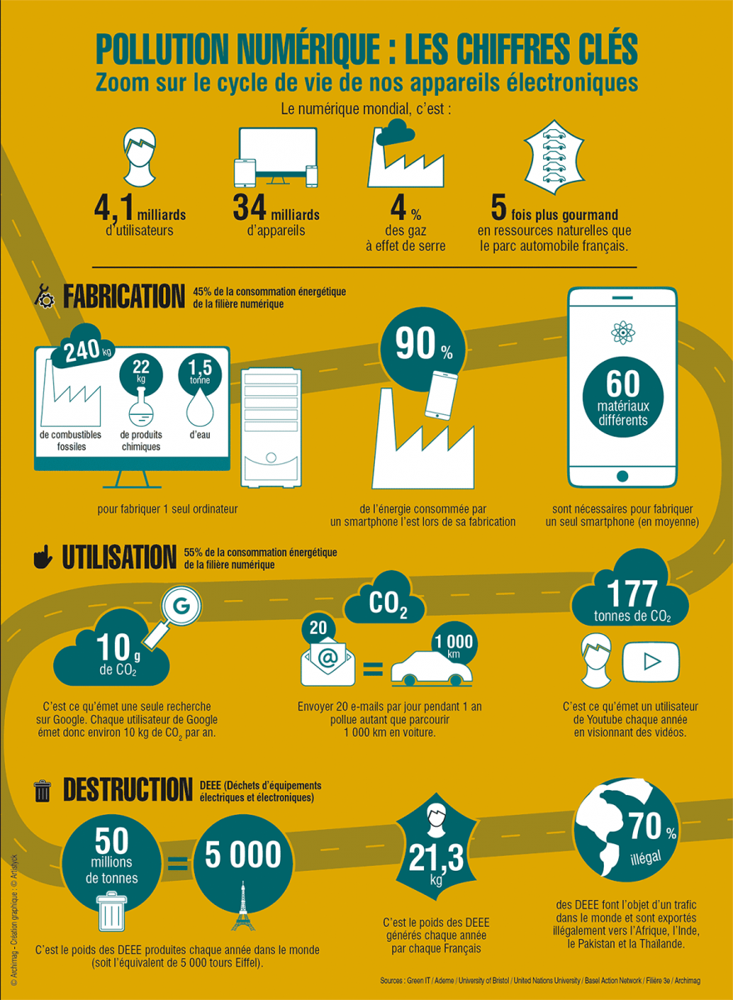
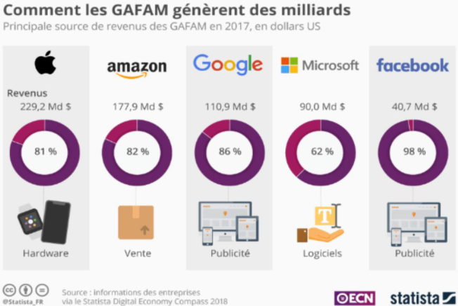

Quels efforts sont mis en place ?
↑
Les GAFAM ont une responsabilité dans la préservation de notre environnement. Ils agissent à l’échelle. Pour cela, certains s’engagent comme Amazon en cofondant Climate Pledge (pour la protection de l’environnement) en 2019 et en le signant1. De plus, d’autres s’engagent à limiter les effets à court-terme comme l’installation des datas centers en Islande afin de limiter l’utilisation de climatisation servant à refroidir les serveurs et en même temps profiter des atouts énergétiques de l’Islande qui produit son électricité avec sa géothermie ou encore avec des éoliennes à grande échelle2.
Pour une protection renforcée, Google et Facebook s'engagent à utiliser un maximum d’énergie verte, Apple garantit sa neutralité en carbone et Microsoft va encore plus loin en s’engageant à une émission carbone négative.
Mais les GAFAM impliquent aussi leurs utilisateurs dans la lutte contre le réchauffement climatique en proposant, par exemple, le trajet le plus écologique pour Google ou le recyclage d’un maximum de matériaux pour Apple. Pour minimiser l’impact de sa livraison, Amazon a commandé des camionnettes électriques et donc livre en ayant un impact moins important et de pouvoir avoir la même efficacité3.
Quelles sont les retombées réelles ?
L’énergie de l’Islande est intéressante mais cela ne fait que déplacer le problème car la planète se réchauffe quand même et les avantages des pays nordiques ne sont donc que temporaires. De plus, la fabrication des serveurs et plus précisément des composants électroniques rejette énormément de gaz à effet de serre de son extraction, son raffinement jusqu’à son recyclage (s’il en existe un).
Au début, Internet devait servir à minimiser la pollution des objets ‘électroniques’ (DVDS). Cela permettait de minimiser la pollution due au faible trafic et du peu de données transmises mais aujourd’hui, regarder une vidéo sur Internet a le même coût écologique (voire plus) que la fabrication et le transport d’un DVD contenant cette vidéo4.
Le stockage massif des données entraîne une consommation excessive des serveurs alors que ces données ne servent uniquement à un ciblage publicitaire mais permettent également aux GAFAM de gagner plus d’argent en revendant ces données ou même de vivre comme pour Facebook qui tire 98% de ses revenus de sa publicité ciblée.
Pour pouvoir proposer des technologies avancées mais aussi à grande échelle, il faut beaucoup de ressources autant en quantité qu’en diversité, ces matériaux sont peu recyclables et très polluants en termes d’extraction de raffinement et de transport. Ils sont quand même massivement utilisés (sans eux les appareils ne fonctionneraient pas). De plus, la fabrication des outils se fait dans des endroits différents comme l'iPhone qui fait 20 fois le tour de la Terre avant d’être livré. Cela comprend l'extraction des matières premières, le raffinement, les différents assemblages des matériaux, l’entreposage et sa livraison5.
De surcroît, les appareils qui ne fonctionnent plus sont envoyés en Afrique ou dans des pays émergents car les principaux composants sont coûteux à recycler voire non recyclables. Là-bas, ils sont entreposés à ciel ouvert certains seront réparés mais les autres seront brûlés pour récupérer du métal fondu et le revendre après. Cela rejette énormément de gaz néfaste pour l’environnement et pour les populations alentour6.
Quelles améliorations sont nécessaires ?
De leur toute puissance, les GAFAM ont un fort pouvoir à l'échelle mondiale. Ils doivent donc montrer l’exemple et fournir davantages de solutions écologiques. Pour cela, un recyclage des matériaux est impératif et doit se faire massivement. Ainsi, ces appareils seront jugés un peu moins jetables et plus durables. Financer la recherche pour des matériaux moins polluants et renouvelables ou encore pour la génération en laboratoire des matériaux qui est certes, à petite échelle mais qui, grâce aux financements, pourrait devenir industrielle.
Des efforts sont faits mais il faut plus désormais comme la diffusion d’Internet par des câbles sous-marins qui perturbent la vie en eaux profondes et détruit des écosystèmes. Pour la collecte de données, elle est massive et très énergivore, il faut tout stocker (aucune donnée est inutile) pour mieux la revendre plus tard.
Regrouper les différents intermédiaires pourrait également limiter des émissions de gaz à effet de serre et les diminuer aurait le même effet. Tous ces intermédiaires ne permettent pas d’avoir un produit de meilleure qualité mais un produit plus compétitif ou encore plus rentable. Les GAFAM n’ont pas admis leurs erreurs avant que des rapports d’ONG environnementales soient publiés après cela des engagements ont été pris.
Prendre des engagements plus marquants et à plus grande échelle serait la solution car comme Amazon l’a annoncé la neutralité carbone est prévue pour 2040 et utiliser de l’énergie renouvelable à 100% en 2030 sauf que ces engagements sont possible plus tôt comme le prouve Microsoft qui a une émission négative en carbone. Ils justifient qu’il le font 10 ans avant l’accord de Paris mais changer maintenant permettrait de se développer durablement.